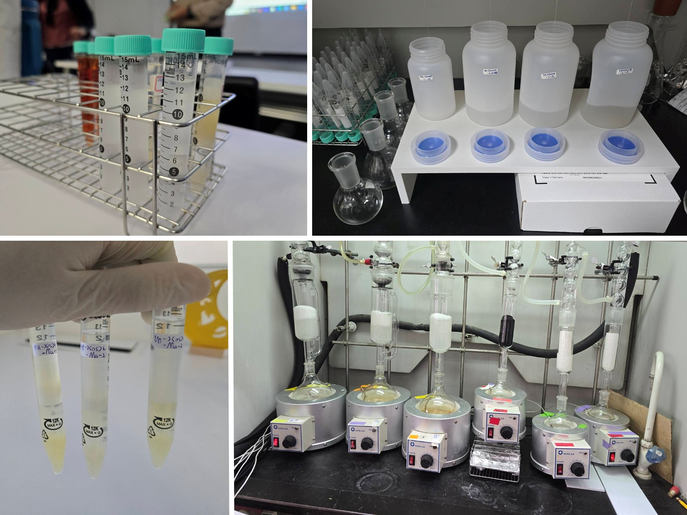

Research Focus
大氣 PFAS 研究
本頁面展示大氣中全氟/多氟烷基物質 (PFAS) 的完整研究流程，包含從實地採樣設計、前處理、萃取優化到儀器分析的實作細節。
研究方法總覽
01. 大氣採樣 (Air Sampling)
使用高量採樣器收集大氣中的 PM2.5 氣固相微粒，並搭配 PUF（聚氨酯泡棉）與活性碳棉作為採樣介質，精準捕捉不同相態的 PFAS 化合物。
03. 儀器分析
針對 PFAA 與 FTS 等特定化合物進行質譜分析，建立檢量線並計算環境濃度。
02. 前處理與萃取
探討酸鹼條件對萃取效率的影響，透過內部標準品校正，確保樣品前處理的回收率與數據品質。
核心實驗流程

01
實地採樣過程
在台灣多個城市佈點，操作高量採樣器。氣相捕捉主要依賴 PUF 與活性碳棉材質的搭配，確保易揮發的 PFAS 物種不流失。過程中需嚴格控管空白樣品 (Blank) 以避免環境背景污染。

02
樣品萃取與濃縮
帶回實驗室後，將濾紙與吸附材進行超音波震盪萃取。針對 PFAS 的化學特性，我們測試了不同酸鹼溶液的比例，以找出最佳的目標物游離狀態，大幅提升 PFAA 與 FTS 類別的回收率。
研究夥伴與團隊
研究的完成仰賴實驗室團隊的合作與指導。